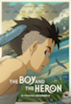
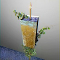

A Little About Myself
Hey yall I'm a student at Red River College Polytech in the soon to be gone Business Information Technologoy (BIT). I'm making this site as a way to show off who I am and to show off some of my personal projects !! This site will also be used to show of what I am into and will have a mysterious contact page I need for this web development project I am working on!
My interests include film, music and reading!!
My last movie watched was Boy and the Heron directed by Hayao Miyazaki. It's a very beautiful drawn movie by the wonderful team at Studio Ghibli. The plot was a little confusing but I was astonished by just how much detail was put into ever frame and the music was fantastic!
My favourite album ever is No Now by Clarence Clarity! It's a very maximal album that ends up blaring you with noise throughout. It took me a bit to appreciate it, but now it's become one of my favourites ever.
The book I'm reading right now is Peridro Street Station by China Miéville. It's a bit of a read at over 700 pages but I've been really enjoying it so far! The setting especially has been really interesting to me, with it being set on a city built on top of the rotting carcase of a giant monster that no one can truly identify.